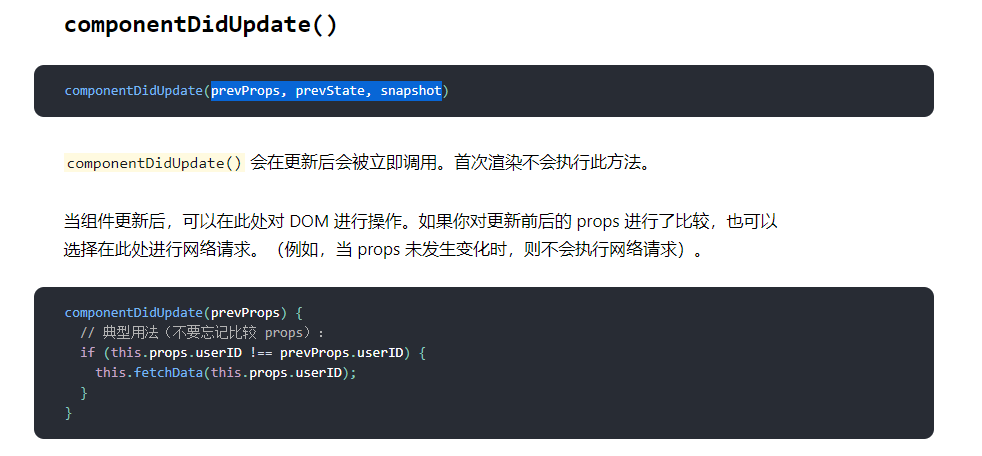
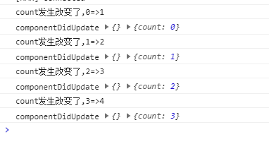

[decorator]react中实现vue watch
react 比如在开发 echarts 应用时，可能会通过一些值改变时，调用 echartsAPI 画图，hook 可以使用 useEffect 监听值改变，但是 class 组件我看没有很好的写法，要是可以按照 vue 的写法就很方便了。
watch
watch:{
// 当count值发生改变时
count(oldValue,newValue){
// ...
}
}
先在 react 中找一个合适的生命周期，可以获取到旧 props 和 state
这个就很合适

watch 要做什么？
watch 对象中的 key 就是我们监控的变量名，要通过对比新旧 props/state 中的该值，执行他的回调函数，并传入 oldValue/newValue
写一个 decorator 给 react 声明周期添加 watch 功能
function Watch(watchvalues) {
return function (target, name, descriptor) {
const fn = descriptor.value;
descriptor.value = function (prevProps, prevState) {
// 识别watchvalues中的值，执行回调
Object.entries(watchvalues).forEach(([name, callback]) => {
const oldValue = prevProps[name] || prevState[name];
const newValue = this.props[name] || this.state[name];
if (oldValue !== newValue) {
callback.apply(this, [oldValue, newValue]);
}
});
fn.apply(this, arguments);
};
return descriptor;
};
}
通过 decorator 为 componentDidUpdate()添加上面 watch 的行为，我们就可以通过传入一个对象，来描述我们要 watch 什么值了
export default class index extends Component {
state = { count: 0 };
@Watch({
count(oldValue, newValue) {
console.log(`count发生改变了,${oldValue}=>${newValue}`);
},
})
componentDidUpdate(prevProps, prevState) {
console.log('componentDidUpdate', prevProps, prevState);
}
render() {
return (
<div>
<button
onClick={() => {
this.setState({ count: this.state.count + 1 });
}}
>
++
</button>
</div>
);
}
}
嘿嘿，不用写 if 判断了
